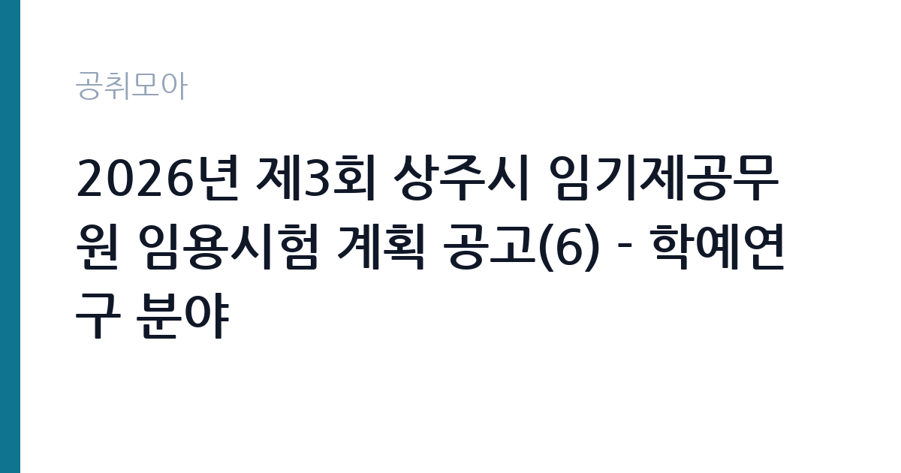

[지자체] 2026년 제3회 상주시 임기제공무원 임용시험 계획 공고(6) - 학예연구 분야
경상북도 상주시 · 경북 · 마감 2026-10-20 (D-15) · 출처 나라일터

한눈에 보는 모집 조건
| 기관 | 경상북도 상주시 |
|---|---|
| 공고명 | 2026년 제3회 상주시 임기제공무원 임용시험 계획 공고(6) - 학예연구 분야 |
| 고용형태 | 임기제 |
| 근무지 | 경북 |
| 게시일 | 2026-10-06 |
| 마감일 | 2026-10-20 (D-15) |
지원자격, 이렇게 읽으세요
- 시간선택제임기제 나급 1명
- 접수 ~2026-10-20 마감
- 세부 조건은 원문 공고문 확인
학예연구 분야 임기제 채용은 통상 학예사 자격증 소지 또는 박물관학, 역사학, 고고학, 미술사학 등 관련 분야 석사 학위 이상을 요구하는 경우가 많습니다. 경력 인정 범위와 가산점 항목은 공고마다 다르므로 원문 공고문의 응시자격 표를 반드시 대조하셔야 합니다. 자격증 사본과 경력증명서는 접수 전에 미리 발급받아 두시기 바랍니다.
이 공고의 포인트
이 공고의 가장 큰 특징은 나급이라는 등급입니다. 임기제 나급은 6급 상당으로 시간선택제 공고 중에서는 상위 등급에 속합니다. 상주박물관 소속으로 유물 연구와 전시 기획 실무를 맡으며, 임용 기간은 2년이고 성과에 따라 최대 5년까지 연장될 수 있습니다. 지역에 정착하면서 박물관 경력을 쌓고 싶은 분께 적합한 자리입니다.
전형은 어떻게 진행되나
전형은 서류전형과 면접시험으로 진행되며 필기시험이 없습니다. 따라서 서류 완성도와 면접 준비가 당락을 가릅니다. 접수는 2026년 10월 19일부터 10월 20일까지이며, 접수 방법과 제출처는 원문에서 확인하셔야 합니다. 문의처는 상주시 총무과 054-537-7163입니다.
원문에서 확인한 전형 방식
○ 모집분야: 학예연구(1명) ○ 근무지역: 경북 상주시 (상주박물관) ○ 임용기간: 2년(최대 5년) ○ 선발방법: 서류전형 및 면접시험 ○ 접수기간 : 2026년 10월 19일 ~ 2026년 10월 20일 ○ 문의처 : 054-537-7163
이런 분께 추천해요
- 박물관이나 미술관에서 학예와 전시 실무를 경험하신 분
- 학예사 자격증을 보유하고 지방 공립박물관 근무를 희망하시는 분
- 상주 지역의 역사와 문화유산에 관심이 많아 정주 의사가 있으신 분
지원 전 체크리스트
- 접수 기간이 10월 19일부터 20일까지 단 이틀이므로 마감일 접수는 피하셔야 합니다
- 학예사 자격증과 경력증명서 등 증빙 서류를 미리 발급받으셔야 합니다
- 시간선택제 주당 근무시간과 그에 따른 보수 수준을 원문에서 확인하셔야 합니다
- 임용 기간 2년과 최대 5년 연장 조건을 확인하고 지원하셔야 합니다
모집 일정과 제출 타이밍
공고 게시일은 2026년 10월 6일이며 원서 접수는 10월 19일부터 20일까지입니다. 이후 서류전형 합격자 발표와 면접시험이 순차적으로 진행됩니다. 접수 첫날 오전에 서류를 제출하시면 보완 요청에 대응할 시간을 확보하실 수 있습니다. 전체 일정표는 원문 공고문에서 확인하시기 바랍니다.
직무 이해하기: 지자체
학예연구 담당자는 박물관 소장 유물의 조사와 연구, 상설전시와 기획전시 구성, 관람객 교육 프로그램 운영, 소장품 등록과 보존 관리 업무를 수행합니다. 상주박물관은 상주 지역의 선사시대부터 근현대까지 향토 자료를 소장한 공립박물관으로 알려져 있습니다. 전시 도록 집필과 학술조사 보고서 작성 같은 기록 업무도 맡으므로 글쓰기 역량이 중요합니다.
자기소개서 작성 팁
자기소개서에는 박물관 실무 경험을 전시 단위로 구체적으로 기술하시기 바랍니다. 담당했던 전시의 주제와 본인의 역할, 관람객 반응을 함께 적으시면 설득력이 높아집니다. 상주 지역의 역사문화 자원에 대한 이해와 이를 전시로 풀어낼 구상을 한 단락으로 제시하시면 좋은 평가를 받으실 수 있습니다.
면접 준비 포인트
면접에서는 상주박물관의 현황과 지역 문화유산에 대한 이해를 질문받을 가능성이 높습니다. 최근 관람했던 전시를 하나 정해 기획 의도와 아쉬운 점을 정리해 가시면 도움이 됩니다. 시간선택제 지원 동기와 2년 임기 동안 이루고 싶은 연구와 전시 목표를 3분 분량으로 준비하시기 바랍니다.
급여·근무조건 읽는 법
시간선택제임기제 나급은 6급 상당으로 지방공무원보수규정의 하한액을 기준으로 보수가 책정됩니다. 시간선택제는 전일제 대비 실제 근무시간 비율만큼 보수를 받으며, 시간외근무수당과 연가보상비 같은 제수당은 근무 실적에 따라 지급될 수 있습니다. 정확한 월 보수액과 주당 근무시간은 원문 공고문에서 확인하셔야 합니다. 출처는 지방공무원보수규정과 임기제 보수 안내 자료입니다.
자주 묻는 질문
- 시간선택제임기제 나급의 근무시간은 어떻게 됩니까
주당 근무시간은 공고마다 다르며 전일제의 일정 비율로 정해집니다. 확정 시간은 원문 공고문에서 확인하시기 바랍니다. - 임기는 얼마나 됩니까
임용 기간은 2년이며 근무 실적에 따라 최대 5년까지 연장될 수 있습니다. - 학예사 자격증이 반드시 필요합니까
학예연구 분야는 자격증 소지자나 관련 전공자를 요구하는 경우가 많습니다. 확정 응시자격은 원문 공고문의 자격 요건표에서 확인하시기 바랍니다.
함께 보면 좋은 공고
[지자체] 2026년 상주시 임기제공무원 임용시험 계획 공고(5) - 중앙제어실 운영 분야(상수도) — 마감 2026-10-20[지자체] 2026년 제3회 상주시 임기제공무원 임용시험 계획 공고(4) - 상황실 전담요원 분야 — 마감 2026-10-20[지자체] 2026년 제3회 상주시 임기제공무원 임용시험 계획 공고(3) - 외국인 계절근로자 전담 분야 — 마감 2026-10-20출처: 나라일터 공개정보를 바탕으로 공취모아가 정리한 안내글입니다. 모집 조건·일정은 변경될 수 있으니 지원 전 반드시 원문 공고문을 확인하세요. 본 글은 정보 제공용이며 합격을 보장하지 않습니다.